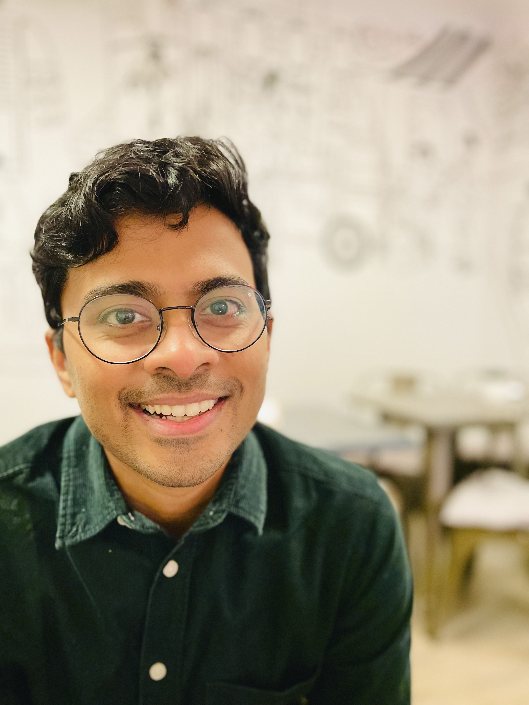

$3M+
Annual fraud uncovered
Anomaly detection for fraudulent pharmacies and prescribers at ZS Associates.
Available for my next chapter
Hi, I’m Akarsh. AI Solutions Architect
I turn open-ended business challenges into AI systems people can rely on. Seven years of building, shipping, and leading — from machine learning to multi-agent systems.
Munich, Germany / No visa sponsorship required

Built & delivered at
01 / Impact
Across finance, healthcare, insurance, and life sciences — the work starts with a problem and ends with something useful.
$3M+
Anomaly detection for fraudulent pharmacies and prescribers at ZS Associates.
40%+
Competitive intelligence through NLP and search analysis with Canvass AI.
0 → 13
Grew Evalueserve’s function while staying hands-on in architecture and delivery.
02 / How I work
Work with domain experts and leadership to turn ambiguity into a clear use case, roadmap, and measure of success.
Solution design · Product strategy · Stakeholder collaboration
Combine retrieval, reasoning, and deterministic tools. Make AI useful, explainable, and grounded in the task.
LangGraph · RAG · PyTorch · Knowledge graphs
Take systems beyond the notebook with APIs, evaluation, observability, and cloud deployment.
Langfuse · Docker · Azure · SAP BTP · FastAPI
03 / The journey
Seven years connecting technical depth with business decisions.
Jul 2024 — Sep 2026
Erlangen, GermanyAgentic AI Engineer · Werkstudent
Built multi-agent financial decision support, with traceable reasoning and reliable calculations.
Apr 2022 — Jul 2023
New Delhi, IndiaLead AI Solutions Engineer
Built a team of 13 and led AI products that made research faster and more effective.
Oct 2018 — Mar 2022
New Delhi, IndiaAdvanced Data Science Associate Consultant
Applied machine learning and optimization to high-stakes healthcare decisions.
May 2017 — Sep 2018
New Delhi, IndiaData Science Associate
Shipped predictive models and document automation for insurance teams.
04 / Always learning
2023 — 2026 / Erlangen, Germany
Friedrich-Alexander-Universität Erlangen-Nürnberg
Thesis: enhancing one-step text-to-image diffusion models with knowledge graphs and reward-based noise optimization. Grade: 1.3
2013 — 2017 / Dehradun, India
University of Petroleum & Energy Studies · 83.2%
Open to opportunities
Have an AI challenge, a role, or an idea in mind?
I’d love to hear about it.